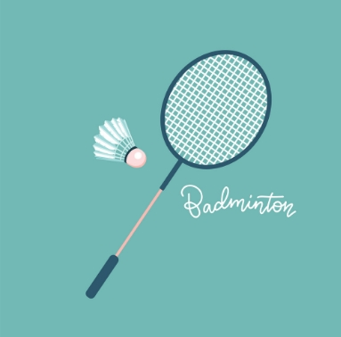
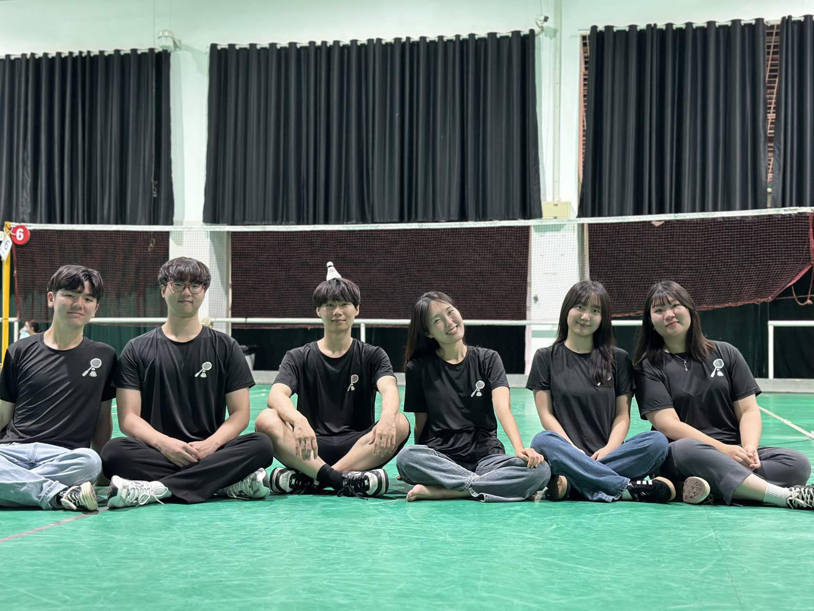
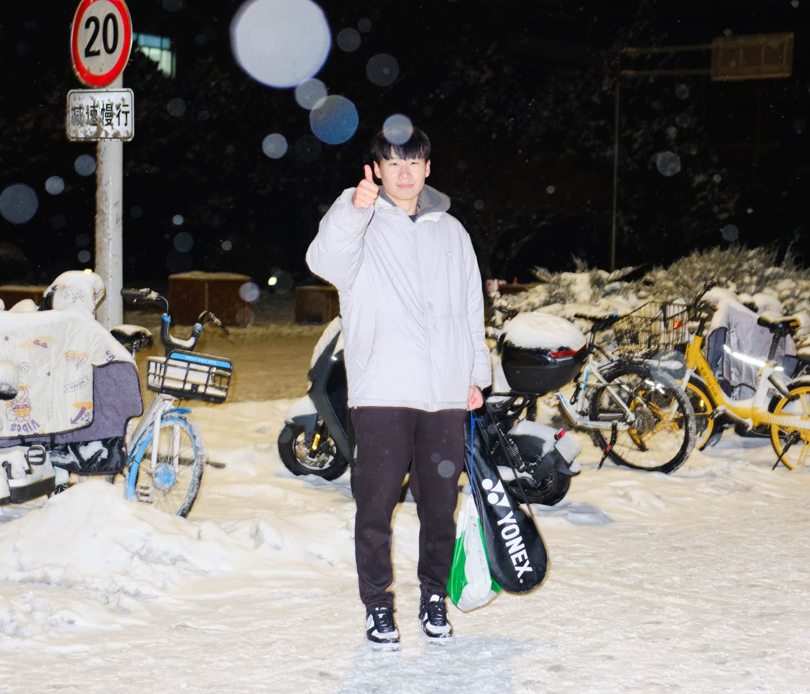
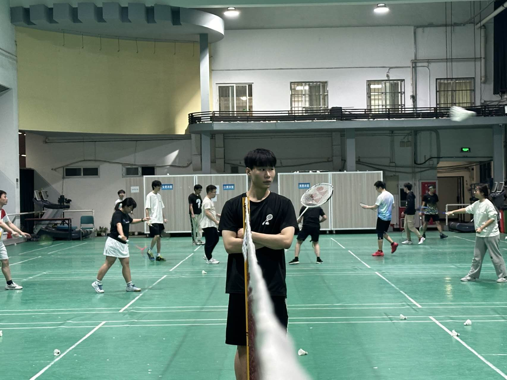
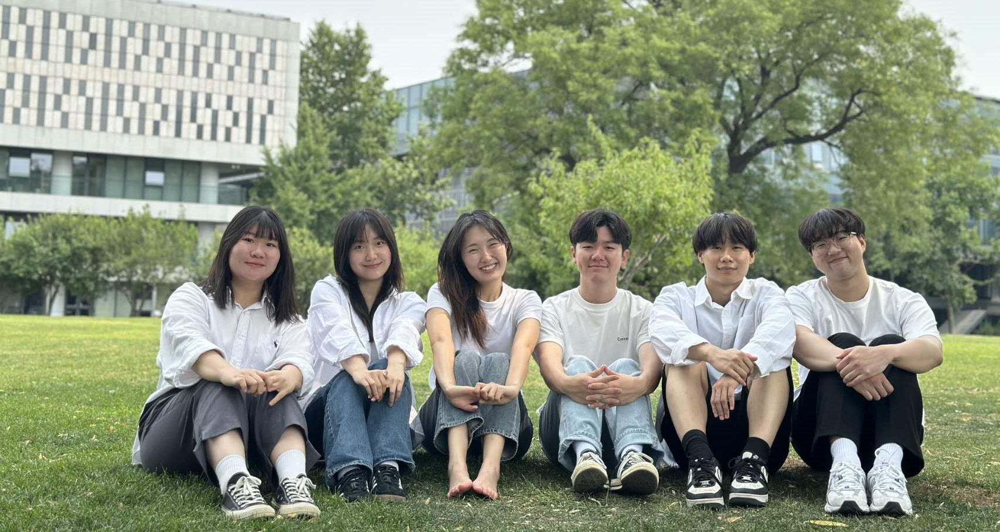

저는 피아노 치는 것을 무척 좋아합니다.초등학교 5학년 때 처음 배우기 시작하여 체르니와 하농, 소나티네로 기본기를 다진 이후, 제가 좋아하는 곡들을 스스로 찾아서 도전해왔습니다.지금까지 많은 곡을 도전하고 완주하고 실패해왔습니다.가장 좋아하는 음악가는 프란츠 리스트입니다.리스트의 Liebestraum No.3의 카덴자와 낭만적이고 서정적인 멜로디에 매료되어 방학동안 연습에 몰두하여 완주하는데 성공했으나 파가니니에 의한 초절기교 연습곡 3번, La campanella는 두 페이지를 넘기지 못하고 포기한 바 있습니다.
학교에서는 수업과 공부하는 시간을 제외하면 주로 배드민턴을 칩니다.매주 3회에서 4회정도 하루일과를 모두 끝내고 나서 학업 스트레스를 건전하게 푸는 방식입니다. 스매시배에도 매번 참여했고 지난 학기에는 한번도 빠지지 않았을 만큼 활발히 동아리 활동에 임하고 있습니다.제 대학생활의 대부분의 추억이 이 스포츠에 있는 것 같아서 배드민턴과 같이 치는 동아리 사람들에게 남다른 애정이 있습니다. 밥 먹을 때는 선수들이 치는 영상을 보면서 시야와 기술을 학습하려고 노력합니다.훗날 대학생활을 회상하면 제일 먼저 같이 스포츠를 즐긴 사람들과 보낸 시간들이 생각나지 않을까 싶습니다.
   